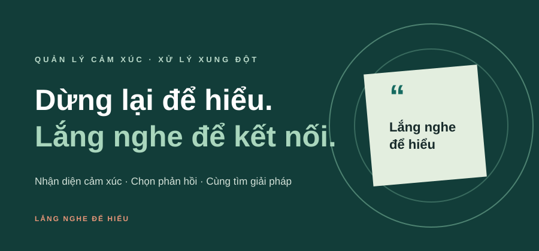
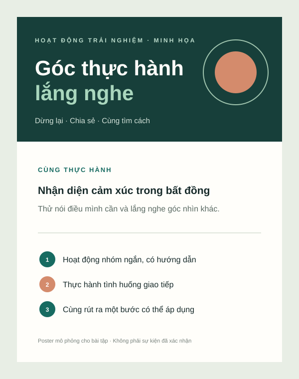

THƯ VIỆN · 09 TƯ LIỆU
Hình ảnh giúp
ý tưởng ở lại.
Ba sản phẩm truyền thông của dự án cùng sáu hình minh họa được thiết kế cho bài tập. Mỗi tư liệu có chú thích để người xem hiểu nội dung và nguồn.
SẢN PHẨM & HÌNH MINH HỌA
Nhìn thấy từng bước của cuộc trò chuyện.
Banner, poster và infographic là sản phẩm nhóm tự thiết kế. Sáu hình vector còn lại là hình minh họa tự tạo, không phải ảnh chụp hay tư liệu bên ngoài.

Nhận diện dự án và nêu thông điệp chính. Nguồn: nhóm tự thiết kế bằng SVG.

Minh họa tiến trình tạm dừng, lắng nghe và cùng chọn giải pháp. Nguồn: nhóm tự thiết kế.

Giới thiệu hoạt động trải nghiệm giả định của dự án. Nguồn: nhóm tự thiết kế bằng SVG.